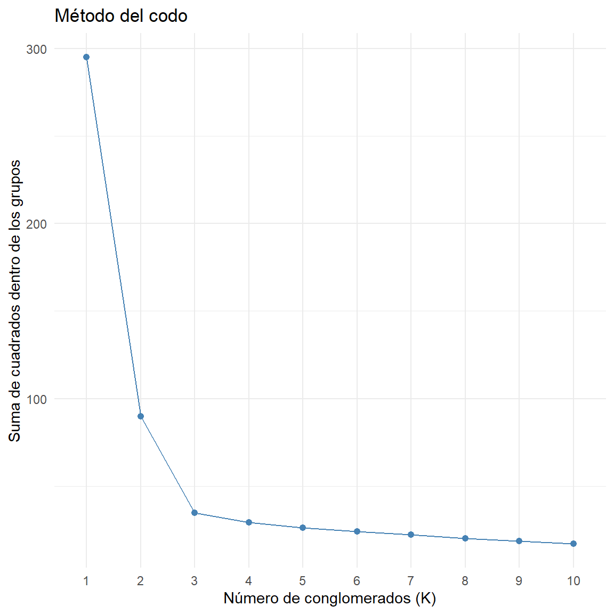
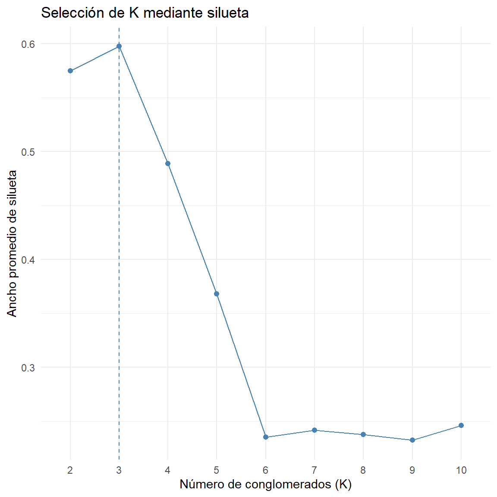
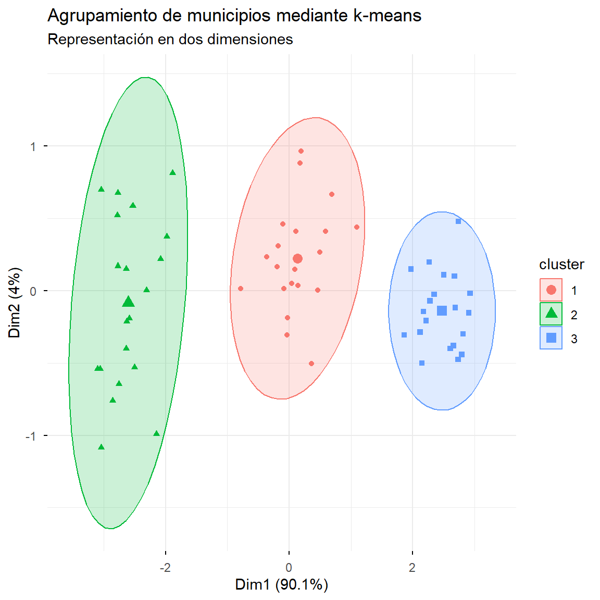
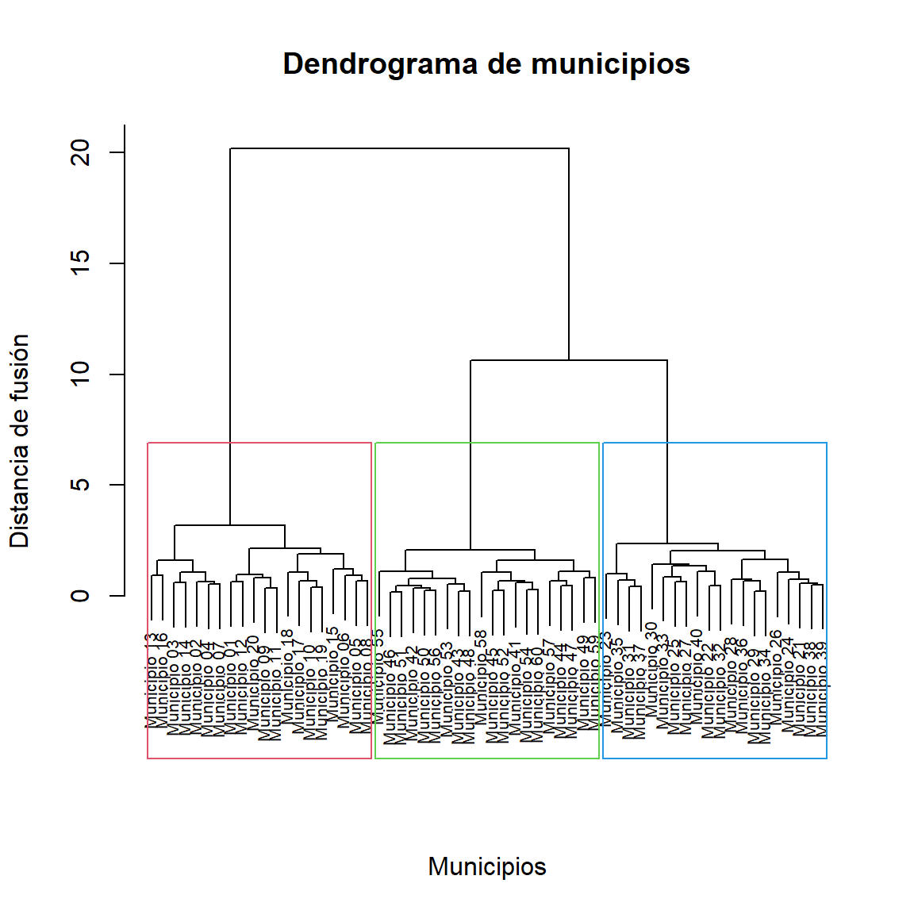
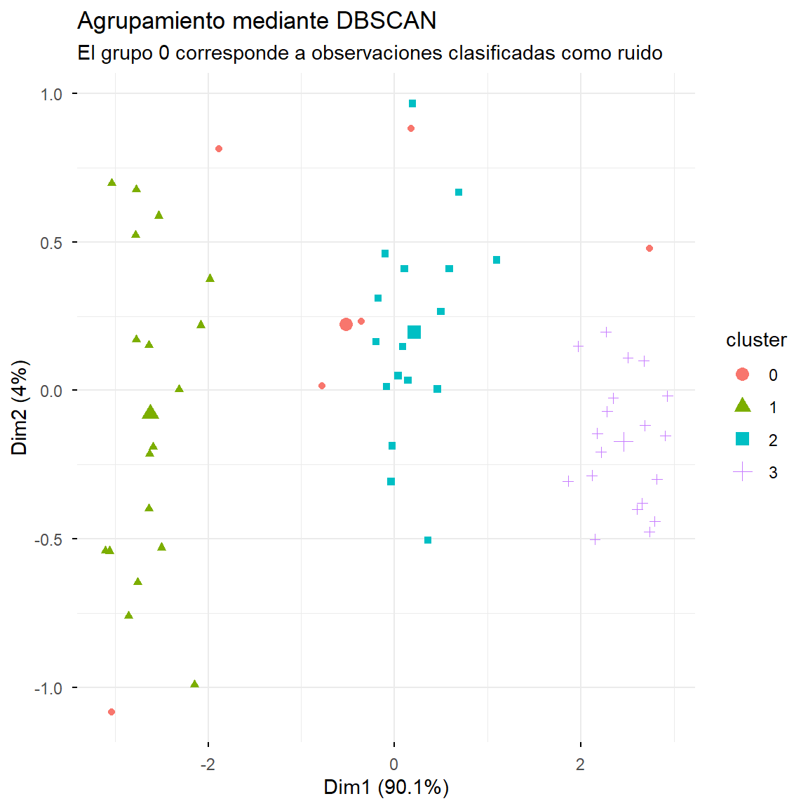

Las entidades públicas recopilan información sobre municipios, barrios, usuarios, instituciones educativas, centros de salud y programas sociales. En muchas situaciones no existen categorías previamente definidas que permitan clasificar estas unidades. El análisis de conglomerados, también conocido como clustering o agrupamiento, permite identificar grupos de observaciones que presentan características similares.
A diferencia de los modelos supervisados, las técnicas de agrupamiento no necesitan una variable respuesta conocida. Su propósito es descubrir estructuras o patrones presentes en los datos. Por esta razón, hacen parte del aprendizaje no supervisado.
En este módulo se presentan los fundamentos del análisis de conglomerados y se desarrollan ejemplos en R utilizando técnicas como k-means, agrupamiento jerárquico y DBSCAN. Las aplicaciones se contextualizan en problemas de gestión pública.
2.1 .Resultados de aprendizaje
Al finalizar el módulo, el estudiante estará en capacidad de:
Explicar el concepto de aprendizaje no supervisado y análisis de conglomerados.
Reconocer la importancia de la preparación y estandarización de los datos.
Calcular e interpretar medidas de distancia o disimilitud.
Aplicar el algoritmo k-means y seleccionar un número razonable de grupos.
Construir e interpretar dendrogramas mediante agrupamiento jerárquico.
Reconocer las características del algoritmo DBSCAN.
Evaluar la calidad y utilidad de una solución de agrupamiento.
Interpretar los grupos identificados en situaciones de administración pública.
3 .Fundamentos del análisis de conglomerados
3.1 .¿Qué es el análisis de conglomerados?
El análisis de conglomerados es un conjunto de técnicas estadísticas y computacionales cuyo objetivo es dividir un conjunto de observaciones en grupos, de manera que:
Las observaciones pertenecientes a un mismo grupo sean relativamente similares.
Las observaciones de grupos diferentes sean relativamente distintas.
Cada grupo recibe el nombre de conglomerado, clúster o segmento.
Por ejemplo, una gobernación puede disponer de indicadores socioeconómicos de 47 municipios y buscar agrupaciones de municipios con condiciones similares de pobreza, cobertura educativa, acceso a servicios públicos y empleo. Los resultados podrían contribuir a identificar necesidades territoriales diferenciadas.
El algoritmo no conoce previamente cuáles municipios deben pertenecer a cada grupo: la estructura se descubre a partir de los datos y de las decisiones metodológicas del analista.
3.2 .Aprendizaje supervisado y no supervisado
Característica
Supervisado
No supervisado
Variable respuesta
Conocida
No se requiere
Objetivo
Predecir o explicar una respuesta
Descubrir patrones o estructuras
Ejemplos
Regresión y clasificación
Conglomerados y reducción de dimensión
Evaluación
Puede compararse con resultados conocidos
Requiere criterios internos y validación contextual
En el análisis de conglomerados no existe necesariamente una única clasificación correcta. La solución depende de las variables, la escala, la medida de distancia, el algoritmo y sus parámetros.
3.3 .Aplicaciones en la administración pública
Algunas aplicaciones posibles son:
Planeación territorial: agrupar municipios según indicadores de desarrollo.
Política social: identificar perfiles de hogares o comunidades con necesidades semejantes.
Educación: agrupar instituciones según cobertura, deserción, resultados y recursos.
Salud pública: identificar territorios con perfiles similares de acceso y demanda de servicios.
Gestión institucional: clasificar dependencias según volumen de trámites, tiempos de atención y recursos.
Seguridad ciudadana: identificar zonas con patrones similares de incidentes, considerando las limitaciones y los riesgos éticos del uso de estos datos.
Los conglomerados son herramientas exploratorias. No deben interpretarse automáticamente como categorías naturales, diagnósticos individuales ni explicaciones causales.
4 .Elementos fundamentales
4.1 .Observaciones y variables
En una matriz de datos:
Las filas representan las unidades de análisis: municipios, instituciones, barrios o usuarios.
Las columnas representan las variables utilizadas para construir los grupos.
Es importante que las variables seleccionadas sean pertinentes para el problema público. Incluir variables irrelevantes puede producir agrupamientos difíciles de interpretar.
4.2 .Medidas de distancia
Los algoritmos de agrupamiento necesitan una forma de cuantificar la similitud o diferencia entre observaciones.
Distancia euclidiana
Es una de las medidas más utilizadas para variables cuantitativas:
d(i,j)=\sqrt{\sum_{k=1}^{p}(x_{ik}-x_{jk})^2}
Donde:
d(i,j): distancia entre las observaciones i y j.
x_{ik}: valor de la variable k en la observación i.
x_{jk}: valor de la variable k en la observación j.
p: número de variables.
Una distancia pequeña indica que las observaciones son similares según las variables incluidas.
Distancia Manhattan
d(i,j)=\sum_{k=1}^{p}|x_{ik}-x_{jk}|
Suma las diferencias absolutas entre las variables de las dos observaciones.
Distancia de Gower
Es útil cuando se tienen variables de diferentes tipos, por ejemplo, cuantitativas, ordinales y nominales. Su aplicación requiere seleccionar una implementación adecuada y revisar cómo se tratan los valores faltantes.
4.3 .¿Por qué estandarizar las variables?
Las variables pueden estar medidas en escalas diferentes. Por ejemplo:
Población: número de habitantes.
Pobreza: porcentaje.
Ingreso: pesos.
Cobertura educativa: porcentaje.
Si se calcula una distancia euclidiana directamente, las variables con escalas numéricas grandes pueden dominar el cálculo.
Una solución habitual es estandarizar mediante puntuaciones Z:
Z_{ij}=\frac{X_{ij}-\bar X_j}{s_j}
Donde:
X_{ij}: valor de la observación i en la variable j.
\bar X_j: media de la variable j.
s_j: desviación estándar de la variable j.
Después de estandarizar, las variables quedan expresadas en una escala comparable. La decisión de estandarizar debe responder al significado de las variables y al algoritmo utilizado.
5 .Técnicas de agrupamiento
5.1 .Algoritmo k-means
K-means es un algoritmo de agrupamiento no jerárquico que divide las observaciones en K grupos. Cada grupo se representa mediante un centroide, que corresponde al vector de medias de las variables para las observaciones asignadas al grupo.
El algoritmo busca minimizar la suma de cuadrados dentro de los conglomerados:
C_k: conjunto de observaciones asignadas al grupo k.
x_i: vector de características de la observación i.
\mu_k: centroide del conglomerado k.
Etapas del algoritmo
Definir el número de conglomerados K.
Seleccionar centros iniciales.
Asignar cada observación al centroide más cercano.
Calcular nuevamente los centroides.
Repetir la asignación y actualización hasta alcanzar un criterio de convergencia.
Ventajas
Es relativamente sencillo de implementar.
Funciona bien con datos cuantitativos y grupos compactos.
Permite resumir los perfiles de los conglomerados mediante centroides.
Limitaciones
Se debe especificar previamente el número K.
Es sensible a valores atípicos y a la inicialización.
Puede tener dificultades con grupos de formas muy diferentes.
La estandarización suele ser importante cuando las variables están en escalas distintas.
5.2 .Selección del número de conglomerados
No existe una regla universal para determinar el número óptimo de grupos. Se pueden combinar diferentes criterios.
Método del codo
Se calcula la suma de cuadrados dentro de los grupos (WSS, Within-Cluster Sum of Squares) para diferentes valores de K. Al aumentar el número de conglomerados, el WSS disminuye. Se busca un punto a partir del cual la reducción adicional sea menos pronunciada.
La silueta evalúa qué tan bien se encuentra una observación dentro de su propio conglomerado frente a los conglomerados vecinos.
s(i)=\frac{b(i)-a(i)}{\max\{a(i),b(i)\}}
Donde:
a(i): distancia promedio entre la observación i y las demás observaciones de su conglomerado.
b(i): menor distancia promedio entre i y las observaciones de otro conglomerado.
La silueta toma valores entre -1 y 1:
Cercano a 1: observación bien asignada.
Cercano a 0: observación ubicada entre dos grupos.
Menor que 0: posiblemente está mejor ubicada en otro grupo.
Una silueta promedio mayor puede indicar una solución más definida, pero debe interpretarse junto con el tamaño y la utilidad de los grupos.
5.3 .Agrupamiento jerárquico
El agrupamiento jerárquico construye una estructura de grupos anidados que puede representarse mediante un dendrograma.
En el enfoque aglomerativo:
Cada observación comienza como un conglomerado individual.
Se identifican los dos conglomerados más cercanos.
Se fusionan en un nuevo conglomerado.
Se actualizan las distancias entre grupos.
Se repite el proceso hasta que todas las observaciones formen un solo grupo.
Métodos de enlace
Método
Característica
single
Distancia mínima entre observaciones de dos grupos
complete
Distancia máxima entre observaciones de dos grupos
average
Promedio de las distancias entre observaciones de dos grupos
ward.D2
Busca minimizar el incremento de la variabilidad interna al fusionar grupos
El dendrograma permite explorar diferentes cantidades de conglomerados mediante un corte a una altura determinada.
Ventajas y limitaciones
El agrupamiento jerárquico permite visualizar la estructura de similitud sin definir desde el comienzo un número único de grupos. Sin embargo, las fusiones realizadas no se revierten y los resultados pueden depender de la distancia y del método de enlace.
5.4 .DBSCAN
DBSCAN (Density-Based Spatial Clustering of Applications with Noise) identifica grupos a partir de la densidad de las observaciones.
Sus parámetros principales son:
eps: radio máximo para considerar que dos observaciones están próximas.
minPts: número mínimo de observaciones requerido para considerar una región suficientemente densa.
DBSCAN distingue:
Puntos núcleo: tienen al menos minPts observaciones dentro de su vecindad.
Puntos frontera: están cerca de un punto núcleo, pero no tienen suficientes vecinos para ser núcleo.
Ruido: no pertenece a un grupo según los parámetros definidos.
Ventajas
No exige definir previamente el número de conglomerados.
Puede identificar grupos con formas no necesariamente esféricas.
Permite identificar observaciones aisladas como ruido.
Limitaciones
Es sensible a la selección de eps y minPts.
Puede tener dificultades cuando los grupos presentan densidades muy diferentes.
La escala de las variables y la distancia utilizada influyen en el resultado.
6 .Preparación del entorno de trabajo en R
6.1 .Instalación y carga de paquetes
Ver código
# Ejecutar una sola vez si los paquetes no están instalados# install.packages(c("tidyverse", "cluster", "factoextra", "dbscan", "NbClust"))library(tidyverse)library(cluster)library(factoextra)library(dbscan)
Los paquetes cumplen las siguientes funciones:
tidyverse: manipulación y visualización de datos.
cluster: algoritmos y medidas para análisis de conglomerados.
factoextra: visualización de resultados de agrupamiento.
dbscan: implementación de DBSCAN.
7 .Ejemplo aplicado
agrupamiento de municipios según indicadores de gestión y desarrollo
7.1 .Planteamiento del problema
Una gobernación desea identificar perfiles de municipios para apoyar la planeación de programas de inversión social. Para ello dispone de indicadores relacionados con:
Pobreza multidimensional (%).
Cobertura educativa (%).
Cobertura de acueducto (%).
Desempleo (%).
Inversión social por habitante (miles de pesos).
El objetivo es identificar municipios con características similares y describir las diferencias entre los grupos.
Los datos que se construyen a continuación son simulados. No representan indicadores oficiales de municipios reales.
7.2 .Construcción de una base simulada
Se crearán 60 municipios distribuidos inicialmente en tres perfiles ilustrativos. Esta estructura permite practicar las técnicas y visualizar grupos diferenciados.
# A tibble: 6 × 6
municipio pobreza cobertura_educativa cobertura_acueducto desempleo
<chr> <dbl> <dbl> <dbl> <dbl>
1 Municipio 01 47.6 60.3 57.0 17.0
2 Municipio 02 39.6 72.9 31.2 17.6
3 Municipio 03 45.7 66.6 31.3 17.7
4 Municipio 04 44.6 71.1 37.7 17.1
5 Municipio 05 41.7 66.3 56.6 13.5
6 Municipio 06 32.4 68.7 55.2 15.2
# ℹ 1 more variable: inversion_social <dbl>
La variable perfil se utilizó solamente para generar los datos y no se incorporó a la base analítica. En una aplicación real, el analista no conocería de antemano los grupos.
municipio pobreza cobertura_educativa cobertura_acueducto
Length:60 Min. : 6.424 Min. :55.48 Min. : 31.19
Class :character 1st Qu.:13.622 1st Qu.:70.55 1st Qu.: 53.78
Mode :character Median :23.529 Median :78.09 Median : 74.85
Mean :26.396 Mean :78.99 Mean : 72.32
3rd Qu.:41.063 3rd Qu.:89.96 3rd Qu.: 92.09
Max. :51.735 Max. :97.29 Max. :100.00
desempleo inversion_social
Min. : 3.817 Min. : 353.6
1st Qu.: 7.780 1st Qu.: 504.1
Median :10.985 Median : 674.2
Mean :11.412 Mean : 722.2
3rd Qu.:14.631 3rd Qu.: 943.6
Max. :19.643 Max. :1196.1
Ver código
# Verificar datos faltantescolSums(is.na(datos_municipios))
La estandarización evita que la inversión social, medida en miles de pesos, domine las distancias debido a su escala numérica.
8 .Aplicación del algoritmo k-means
8.1 .Método del codo
Se calcula el WSS para valores de K entre 1 y 10.
Ver código
set.seed(123)fviz_nbclust( datos_escalados, kmeans,method ="wss",k.max =10,nstart =25) +labs(title ="Método del codo",x ="Número de conglomerados (K)",y ="Suma de cuadrados dentro de los grupos" ) +theme_minimal()

Interpretación: se identifica el punto donde agregar otro conglomerado deja de producir una reducción importante del WSS. Este criterio es orientador y no determina por sí solo una solución definitiva.
8.2 .Método de la silueta
Ver código
set.seed(123)fviz_nbclust( datos_escalados, kmeans,method ="silhouette",k.max =10,nstart =25) +labs(title ="Selección de K mediante silueta",x ="Número de conglomerados (K)",y ="Ancho promedio de silueta" ) +theme_minimal()

La solución con mayor silueta promedio puede ofrecer una separación más clara. Sin embargo, conviene contrastarla con el método del codo y con la interpretación sustantiva de los grupos.
8.3 .Entrenamiento del modelo k-means
Para el ejemplo se utilizarán tres conglomerados, como una decisión ilustrativa que deberá contrastarse con los gráficos y métricas anteriores.
# A tibble: 6 × 7
municipio pobreza cobertura_educativa cobertura_acueducto desempleo
<chr> <dbl> <dbl> <dbl> <dbl>
1 Municipio 01 47.6 60.3 57.0 17.0
2 Municipio 02 39.6 72.9 31.2 17.6
3 Municipio 03 45.7 66.6 31.3 17.7
4 Municipio 04 44.6 71.1 37.7 17.1
5 Municipio 05 41.7 66.3 56.6 13.5
6 Municipio 06 32.4 68.7 55.2 15.2
# ℹ 2 more variables: inversion_social <dbl>, conglomerado <fct>
8.5 .Visualización de los conglomerados
Ver código
fviz_cluster( modelo_kmeans,data = datos_escalados,geom ="point",ellipse.type ="norm",ggtheme =theme_minimal()) +labs(title ="Agrupamiento de municipios mediante k-means",subtitle ="Representación en dos dimensiones" )

La representación utiliza una proyección de los datos para facilitar la visualización. Por tanto, las distancias observadas en el gráfico pueden no reflejar exactamente todas las dimensiones originales.
8.6 .Perfil de los conglomerados
Se calculan los promedios de las variables originales para interpretar los grupos.
Interpretación: los promedios permiten caracterizar cada grupo. Por ejemplo, un conglomerado podría presentar mayor pobreza, menor cobertura de acueducto y menor inversión social. Esta descripción podría orientar estudios de focalización territorial, pero no debe convertirse automáticamente en una decisión de asignación de recursos sin análisis adicional.
Como los indicadores tienen unidades distintas, el gráfico facilita la comparación dentro de cada indicador, pero no debe interpretarse comparando directamente la magnitud entre ejes.
9 .Agrupamiento jerárquico
9.1 .Calcular la matriz de distancias
Se utilizará la distancia euclidiana sobre las variables estandarizadas.
Call:
hclust(d = distancias, method = "ward.D2")
Cluster method : ward.D2
Distance : euclidean
Number of objects: 60
9.3 .Construir el dendrograma
Ver código
plot( modelo_jerarquico,labels = datos_municipios$municipio,main ="Dendrograma de municipios",xlab ="Municipios",ylab ="Distancia de fusión",sub ="",cex =0.65)rect.hclust( modelo_jerarquico,k =3,border =2:4)

El dendrograma representa el proceso de unión de los municipios. Las ramas que se fusionan a distancias pequeñas corresponden a observaciones o grupos relativamente similares.
Los números de los grupos son etiquetas arbitrarias. Por ejemplo, el conglomerado 1 de k-means no necesariamente corresponde al conglomerado 1 del método jerárquico. La comparación debe centrarse en la composición de los grupos y sus perfiles.
10 .Aplicación de DBSCAN
DBSCAN permite identificar grupos según la densidad de las observaciones y detectar puntos que no se ajustan a los grupos encontrados.
10.1 .Ajustar DBSCAN
Los parámetros eps y minPts deben seleccionarse de acuerdo con la escala de los datos y la estructura de las distancias. El siguiente ajuste es un punto de partida ilustrativo, no una configuración universal.
fviz_cluster(list(data =as.matrix(datos_escalados),cluster = modelo_dbscan$cluster ),geom ="point",ellipse =FALSE,ggtheme =theme_minimal()) +labs(title ="Agrupamiento mediante DBSCAN",subtitle ="El grupo 0 corresponde a observaciones clasificadas como ruido" )

Si la configuración no produce una agrupación útil, se deben explorar otros valores de eps y minPts, revisar la escala de los datos y analizar la distribución de distancias. No se debe escoger un parámetro solamente porque genera una cantidad de grupos deseada.
Una silueta promedio positiva y relativamente alta sugiere que las observaciones están más próximas a su propio grupo que a los grupos vecinos. Valores bajos o negativos pueden indicar solapamiento o asignaciones poco claras.
11.2 .Tamaño de los conglomerados
Ver código
table(datos_clasificados$conglomerado)
1 2 3
20 20 20
También se puede calcular la proporción de municipios en cada grupo:
Ver código
datos_clasificados %>%count(conglomerado) %>%mutate(porcentaje =100* n /sum(n) )
Un grupo muy pequeño puede ser relevante si representa municipios con características excepcionales, pero también puede reflejar valores atípicos o una solución demasiado fragmentada.
11.3 .Estabilidad y validación externa
La calidad interna no es suficiente. Se recomienda:
Repetir el análisis con diferentes semillas o muestras.
Examinar si los perfiles se mantienen al cambiar algunas variables.
Comparar resultados con conocimiento territorial y fuentes administrativas.
Evaluar si los grupos son interpretables y útiles para la política pública.
Si existen categorías externas confiables, contrastar los grupos sin confundir esa comparación con una validación causal.
12 .Consideraciones para la administración pública
El análisis de conglomerados puede apoyar la planeación y la identificación de perfiles territoriales, pero requiere precauciones:
Calidad de los datos: indicadores desactualizados o incompletos pueden producir grupos engañosos.
Selección de variables: las variables deben tener justificación técnica y relación con el problema público.
Escalas y ponderaciones: estandarizar no resuelve por sí solo las diferencias conceptuales entre indicadores.
Sesgos territoriales: los grupos pueden reflejar desigualdades históricas o diferencias de medición.
Interpretación: un conglomerado no constituye una categoría oficial ni una explicación causal.
Transparencia: documentar variables, transformaciones, distancias, algoritmos y parámetros.
Uso responsable: no utilizar agrupamientos como único fundamento para negar beneficios, excluir comunidades o tomar decisiones individuales de alto impacto.
13 .Actividades para el estudiante
13.1 .Actividad 1.
Comprensión conceptual
Responda con sus propias palabras:
¿Qué es el análisis de conglomerados?
¿Cuál es la diferencia entre aprendizaje supervisado y no supervisado?
¿Por qué es importante estandarizar las variables antes de aplicar k-means?
¿Qué representa el centroide de un conglomerado?
¿En qué consiste el método del codo?
¿Cómo se interpreta el coeficiente de silueta?
¿Qué información proporciona un dendrograma?
¿Cuál es la diferencia entre k-means y DBSCAN?
¿Por qué los resultados del agrupamiento no deben interpretarse como relaciones causales?
13.2 .Actividad 2.
Agrupamiento de municipios
Utilizando la base datos_municipios:
Seleccione al menos cuatro indicadores.
Estandarice las variables.
Aplique el método del codo para valores de K entre 1 y 10.
Aplique el método de la silueta.
Justifique el número de conglomerados seleccionado.
Entrene un modelo k-means con al menos 30 inicializaciones.
Identifique los municipios de cada grupo.
Construya una tabla con los perfiles promedio.
Interprete las características de cada conglomerado.
Elabore una recomendación para la planeación territorial.
13.3 .Actividad 3.
Agrupamiento de instituciones educativas
Una secretaría de educación desea identificar perfiles de instituciones educativas. Construya una base simulada de al menos 100 instituciones con las variables:
Variable
Descripción
estudiantes
Número de estudiantes matriculados
docentes
Número de docentes
desercion
Tasa de deserción (%)
cobertura_internet
Porcentaje de estudiantes con acceso a internet
resultados_saber
Puntaje promedio en una prueba estandarizada
inversion_estudiante
Inversión anual por estudiante, en miles de pesos
Desarrolle las siguientes tareas:
Genere los datos con set.seed().
Realice un análisis exploratorio.
Revise valores faltantes y valores atípicos.
Estandarice las variables pertinentes.
Aplique k-means y determine un número razonable de conglomerados.
Aplique agrupamiento jerárquico con el método ward.D2.
Compare los resultados de ambos métodos.
Caracterice los grupos mediante tablas y gráficos.
Proponga acciones diferenciadas de apoyo institucional.
Explique las limitaciones del análisis.
13.4 .Actividad 4.
Comparación de técnicas
Utilice una misma base de datos y compare k-means, agrupamiento jerárquico y DBSCAN.
¿Cuántos grupos identifica cada método?
¿Qué observaciones quedan clasificadas como ruido en DBSCAN?
¿Cuál es el promedio de silueta de la solución k-means?
¿Qué método genera grupos más fáciles de interpretar?
¿Los resultados son estables al modificar los parámetros?
¿Cuál técnica recomendaría para el problema estudiado? Justifique.
13.5 .Actividad 5.
Reflexión sobre política pública
Una gobernación agrupa municipios con indicadores de pobreza, cobertura educativa y acceso a servicios públicos. Decide asignar recursos únicamente a los municipios del conglomerado con mayor pobreza promedio.
Analice críticamente esta decisión:
¿Qué ventajas puede ofrecer el agrupamiento?
¿Qué limitaciones presenta utilizar el promedio del grupo para asignar recursos?
¿Podrían existir municipios con necesidades particulares dentro de otros conglomerados?
¿Qué otros criterios deberían considerarse para asignar recursos públicos?
¿Cómo garantizaría transparencia y equidad en la decisión?
14 .Reto de aplicación
Seleccione una problemática de administración pública que pueda estudiarse mediante técnicas de agrupamiento. Algunas posibilidades son:
Clasificación exploratoria de municipios según indicadores de desarrollo.
Agrupamiento de instituciones educativas según cobertura y resultados.
Identificación de perfiles de centros de salud según capacidad y demanda.
Segmentación de dependencias según eficiencia operativa.
Agrupamiento de barrios según acceso a servicios públicos.
Elabore un informe que contenga:
Descripción del problema y objetivo del análisis.
Unidad de análisis y descripción de las variables.
Justificación de la selección de variables.
Exploración y preparación de los datos.
Estandarización y medida de distancia.
Aplicación de por lo menos dos técnicas de agrupamiento.
Criterios utilizados para seleccionar la solución.
Caracterización e interpretación de los grupos.
Recomendaciones para la gestión pública.
Limitaciones y consideraciones éticas.
15 .Conclusiones
El análisis de conglomerados permite descubrir patrones y construir perfiles de unidades territoriales, instituciones o usuarios a partir de sus características. K-means es útil para formar grupos alrededor de centroides; el agrupamiento jerárquico permite explorar relaciones mediante dendrogramas; y DBSCAN identifica agrupaciones basadas en densidad y observaciones aisladas.
La calidad de los resultados depende de la selección de variables, la preparación de los datos, la escala de medición, la distancia y los parámetros del algoritmo. Por ello, es conveniente combinar criterios estadísticos con conocimiento del contexto institucional.
En la administración pública, los conglomerados pueden apoyar diagnósticos y estrategias diferenciadas, pero no reemplazan el análisis social, territorial ni la deliberación pública. Sus resultados deben ser transparentes, verificables y utilizados con criterios de equidad.
16 .Referencias y recursos
Kaufman, L., & Rousseeuw, P. J. (1990). Finding Groups in Data: An Introduction to Cluster Analysis. Wiley.
MacQueen, J. (1967). Some methods for classification and analysis of multivariate observations. Proceedings of the Fifth Berkeley Symposium on Mathematical Statistics and Probability, 1, 281–297.
Ester, M., Kriegel, H.-P., Sander, J., & Xu, X. (1996). A density-based algorithm for discovering clusters in large spatial databases with noise. Proceedings of the Second International Conference on Knowledge Discovery and Data Mining, 226–231.
Documentación de stats::kmeans(): https://stat.ethz.ch/R-manual/R-devel/library/stats/html/kmeans.html
Documentación de cluster: https://cran.r-project.org/package=cluster
Documentación de factoextra: https://cran.r-project.org/package=factoextra
Documentación de dbscan: https://cran.r-project.org/package=dbscan